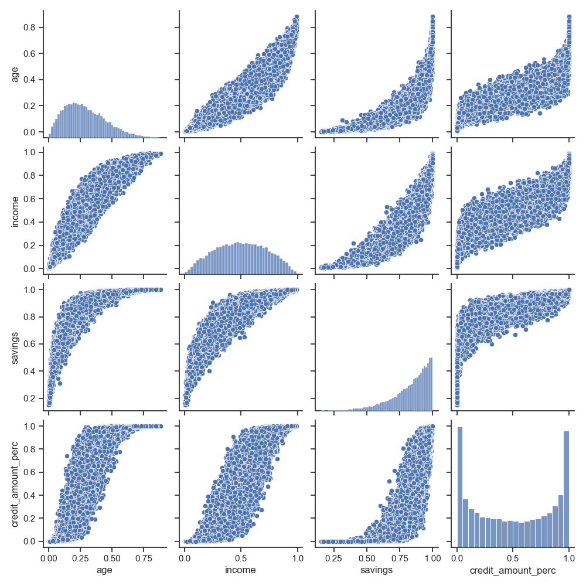

Sample and Test Data
The package provides some functionality to create test data for the different classes. For example, for first simple tests of some fancy calibration method one would like to have a bunch of instruments together with certain prices. Here, the methods for the creation may be of special use.
Some classes provide a _create_sample method. This method can be used to create a sample of the respective classes.
Spreadcurves
Credit Default Data
- class rivapy.sample_data.market_data.credit_default.CreditDefaultData[source]
Bases:
object- static sample(n_data: int, seed: int = None, constant=-1.0, cov: ndarray = None) DataFrame[source]
Sample credit default data.
Return a pandas DataFrame that contains some credit features together with the default probability and an indicator if the default occured (1) or if the credit did not default (0). The data is generated by a logistic regression where the pd for a credit is computed by logistic regression (with fixed coefficients). The following features are used
\(x_{\mbox{age}}\) age of lender, sampled from beta distribution (a=2, b=5)
\(x_{\mbox{income}}\) income of lender, sampled from beta distribution (a=2.0, b=2.0)
\(x_{\mbox{savings}}\) savings of lender, sampled from beta distribution (a=5.0, b=1.0)
\(x_{\mbox{amount}}\) amount of credit, sampled from beta distribution (a=0.5, b=0.5)
\(x_{\mbox{region}}\) one hot encoded feature indicating one of three regions the lender lives in. The region are uniformly distributed
The single features (exception is the region that is drawn independently of the other features) are related via a Gaussian copula. The following figure showsthe distributions and pairplots for a generated sample of features.

After the features have been generated, logistic regression is used to compute default probabilities (pd) via the formula
\[pd = \frac{1}{1+e^{x_{\mbox{age}}}\]- Parameters:
n_data (int) – Number of data sampled (number of rows of final DataFrame).
seed (int, optional) – The seed used internally, if None, no seed will be set. Defaults to None.
constant (float, optional) – Constant used in logistic regression that determines the overall level of the pd. Defaults to -1.0.
cov (np.ndarray, optional) – Covariance matrix used in the Gaussian copula. Defaults to None (thena flat covariance of 0.95 is used).
- Returns:
DataFrame with features, default probabilities and default indicator.
- Return type:
pd.DataFrame
{kind=link}
Dummy Power Spot Price
- rivapy.sample_data.dummy_power_spot_price.spot_price_model(timestamp: datetime, spot_price_level: float, peak_price_level: float, solar_price_level: float, weekend_price_level: float, winter_price_level: float, epsilon_mean: float = 0, epsilon_var: float = 1, seed: int = 42) float[source]
Dummy power spot price model.
\[ \begin{align}\begin{aligned}S(t) = S_0 + \begin{cases} 0, & 0 \leq h(t) < 8\\ P_p, & 8 \leq h(t) < 11\\ -P_{pv}, & 11 \leq h(t) < 16\\ P_p, & 16 \leq h(t) \leq 20\\ 0, & 20 < h(t) \leq 23 \end{cases} + \begin{cases} 0, & 1\leq d(t) \leq 5\\ -P_{we}, & 6\leq d(t) \leq 7 \end{cases} + \begin{cases} 0, & m(t) \in \{4,5,6,7,8,9\}\\ P_{W}, & m(t) \in \{1,2,3,10,11,12\} \end{cases} + \varepsilon\end{aligned}\end{align} \]\[ \begin{align}\begin{aligned}\begin{aligned} S_0 &\quad \text{Spot price level}\\ P_p &\quad \text{Peak price level}\\ P_{pv} &\quad \text{Price level with regard to solar power}\\ P_{we} &\quad \text{Price level for weekends}\\ P_W &\quad \text{Price level for winter}\\ h(t) &\quad \text{Hour of the time step } t\\ d(t) &\quad \text{Weekday of the time step } t\\ m(t) &\quad \text{Month of the time step } t\\ \varepsilon &\sim \mathcal{N}(\mu, \sigma^2) \end{aligned}\end{aligned}\end{align} \]- Parameters:
timestamp (dt.datetime) – Time stamp
spot_price_level (float) – Spot price level
peak_price_level (float) – Peak price level
solar_price_level (float) – Price level with regard to solar power
weekend_price_level (float) – Price level for weekends
winter_price_level (float) – Price level for winter
epsilon_mean (float, optional) – Additional additive noise mean. Defaults to 0.
epsilon_var (float, optional) – Additional additive noise standard deviation. Defaults to 1.
seed (int, optional) – Random seed. Defaults to 42.
- Returns:
spot price
- Return type:
float
Example:
parameter_dict = { 'spot_price_level': 100, 'peak_price_level': 10, 'solar_price_level': 8, 'weekend_price_level': 10, 'winter_price_level': 20, 'epsilon_mean': 0, 'epsilon_var': 5 } date_range = pd.date_range(start='1/1/2023', end='1/1/2025', freq='h', inclusive='left') spot_prices = list(map(lambda x: spot_price_model(x, **parameter_dict), date_range))